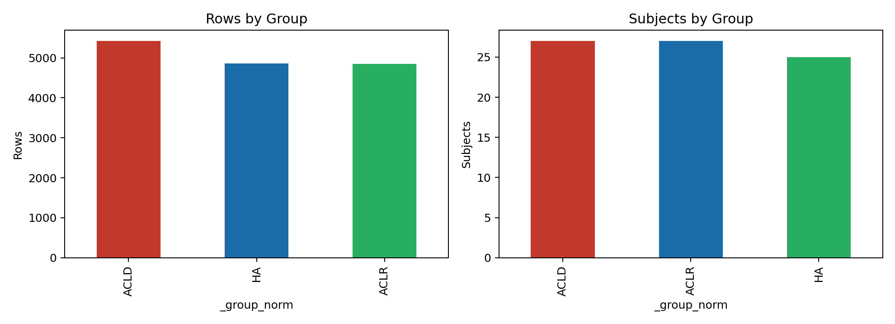
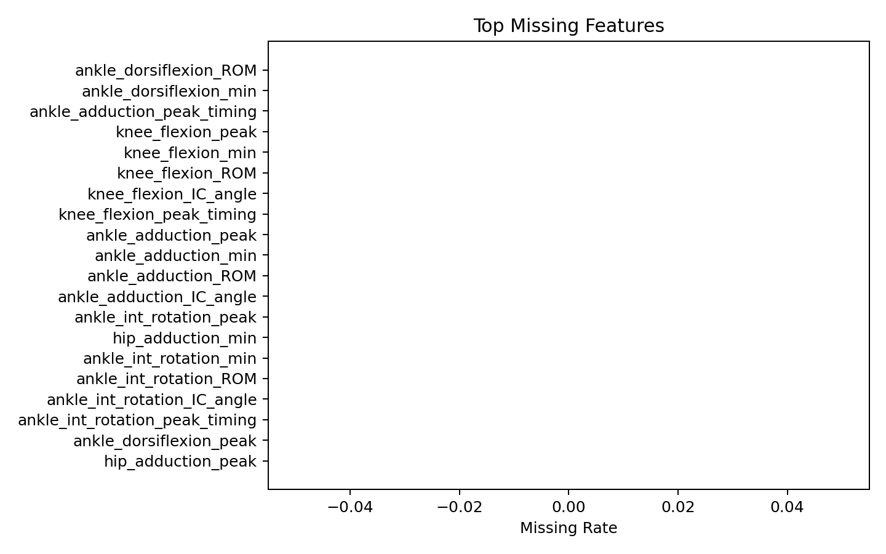
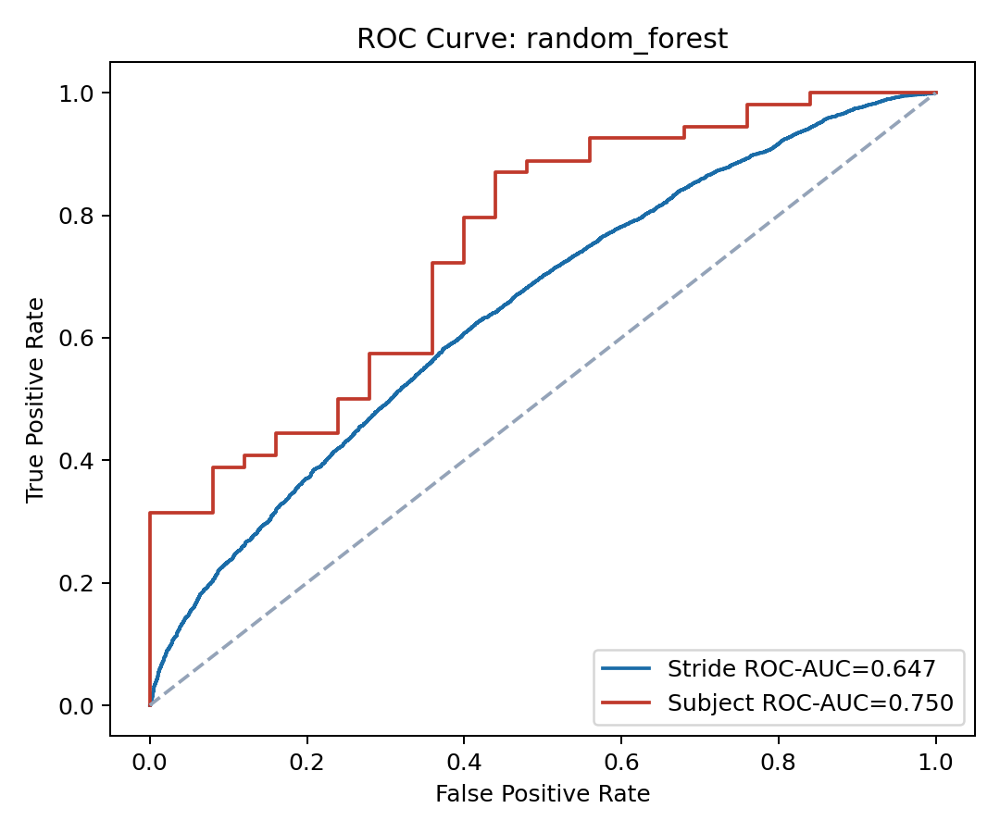
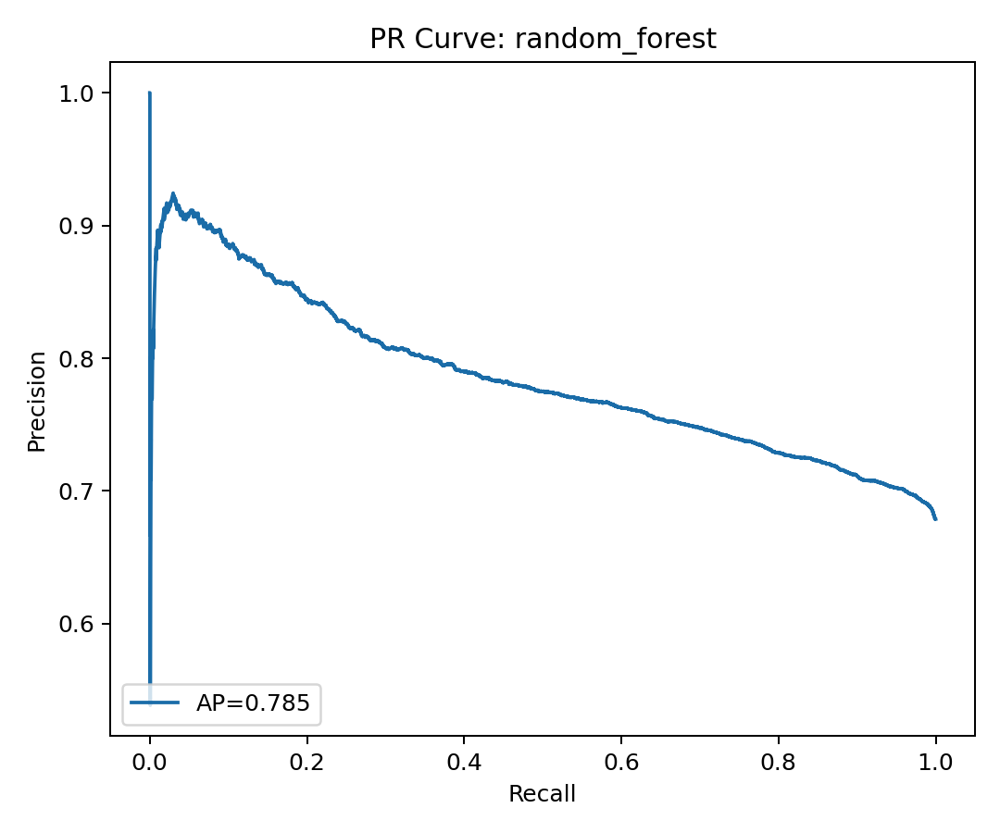
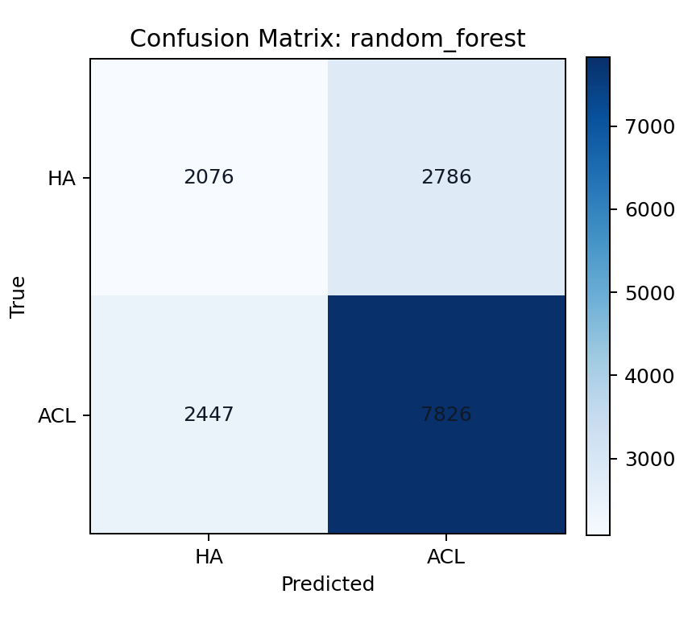
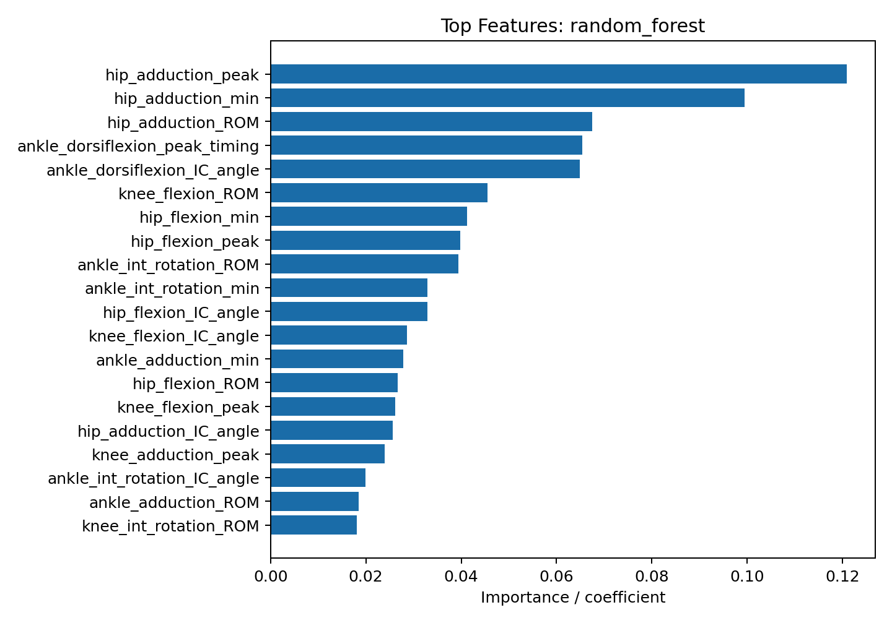

ACL 보행 전통 ML 결과 보고서
생성 시각: 2026-05-30 00:51:41 · Light theme
data/processed/features_scalar.csv주의: 상단 첫 요약의 stride-level 모델은 원 계획의 stride 테이블 기준 결과이며, 전체 후보 비교 최고 성능은 위 카드와 하단 후보 비교 표를 기준으로 해석한다.
연구 배경 요약
IMU 기반 다속도 보행 데이터로 ACL 결손(ACLD), ACL 재건(ACLR), 건강 대조군(HA)의 보행 차이를 분석한다. 기존 통계 보고서는 ACLD 27명, ACLR 27명, HA 25명, Normal/Slow/Fast 3속도 조건, Hip/Knee/Ankle 3평면 관절각 및 LSI/ROM/peak 지표를 사용했다.
Bonferroni 보정 후 5개 스칼라 지표가 유의했고, fast 속도 무릎 굴곡 loading response peak LSI가 가장 큰 효과 크기를 보였다. ACLR 환측 무릎 굴곡 첫 피크가 건측 대비 낮고, 고관절 굴곡 ROM 감소는 ACLD/ACLR 모두에서 HA 대비 관찰되었다.
타깃 정의
기본 ML 타깃은 ACLD/ACLR=1, HA=0 이진 분류로 둔다. 이는 임상적으로 ACL 병력군과 건강 대조군 판별에 직접 대응하며, 피험자 수가 작은 3군 다중분류보다 subject-safe CV에서 더 안정적이다.
데이터 요약
선택 데이터는 data/processed/stride_level_peaks.parquet이며 15135행, 52열, 79명의 subject를 포함한다.
{
"ACLD": 5421,
"HA": 4862,
"ACLR": 4852
}{
"ACLD": 27,
"ACLR": 27,
"HA": 25
}

전처리 및 누수 방지
- 결측 numeric feature는 train fold median, categorical feature는 최빈값으로 대체했다.
- 범주형 feature는 train fold one-hot encoding을 적용했다.
- 선형/SVM 계열은 scaling을 train fold 안에서만 수행했다.
- Dropped identifiers, labels, group/cohort fields, source/path/file, split/fold, and matching/pair columns.
- Feature selection은 fold 내부
SelectKBest(f_classif, k<=30)로 제한했다.
검증 전략
동일 subject의 stride가 train/test fold에 동시에 들어가지 않도록 subject group 기반 CV를 사용했다. CV 방식: StratifiedGroupKFold.
모델별 성능 비교
| accuracy | balanced_accuracy | precision | recall | f1 | macro_f1 | roc_auc | average_precision | model | n_folds | cv |
|---|---|---|---|---|---|---|---|---|---|---|
| 0.654 | 0.594 | 0.737 | 0.762 | 0.749 | 0.596 | 0.647 | 0.785 | random_forest | 5.000 | StratifiedGroupKFold |
| 0.638 | 0.582 | 0.731 | 0.740 | 0.735 | 0.583 | 0.629 | 0.770 | lightgbm | 5.000 | StratifiedGroupKFold |
| 0.687 | 0.551 | 0.703 | 0.932 | 0.802 | 0.530 | 0.627 | 0.764 | xgboost | 5.000 | StratifiedGroupKFold |
| 0.688 | 0.548 | 0.702 | 0.939 | 0.803 | 0.524 | 0.626 | 0.763 | gradient_boosting | 5.000 | StratifiedGroupKFold |
| 0.572 | 0.541 | 0.709 | 0.627 | 0.665 | 0.536 | 0.577 | 0.734 | logistic_regression | 5.000 | StratifiedGroupKFold |
| 0.517 | 0.541 | 0.719 | 0.473 | 0.571 | 0.509 | 0.537 | 0.706 | linear_svm | 5.000 | StratifiedGroupKFold |
최고 모델 상세
Stride-level ROC-AUC는 0.647, macro F1은 0.596이다. Subject-level 평균 score 기준 ROC-AUC는 0.750이다.



Feature Importance
| feature | importance | abs_importance |
|---|---|---|
| hip_adduction_peak | 0.121 | 0.121 |
| hip_adduction_min | 0.100 | 0.100 |
| hip_adduction_ROM | 0.067 | 0.067 |
| ankle_dorsiflexion_peak_timing | 0.065 | 0.065 |
| ankle_dorsiflexion_IC_angle | 0.065 | 0.065 |
| knee_flexion_ROM | 0.046 | 0.046 |
| hip_flexion_min | 0.041 | 0.041 |
| hip_flexion_peak | 0.040 | 0.040 |
| ankle_int_rotation_ROM | 0.039 | 0.039 |
| ankle_int_rotation_min | 0.033 | 0.033 |
| hip_flexion_IC_angle | 0.033 | 0.033 |
| knee_flexion_IC_angle | 0.029 | 0.029 |
| ankle_adduction_min | 0.028 | 0.028 |
| hip_flexion_ROM | 0.027 | 0.027 |
| knee_flexion_peak | 0.026 | 0.026 |

기존 통계 결과와의 연결
기존 보고서에서 fast 조건 무릎 굴곡 loading response peak LSI, 고관절 굴곡 ROM, 대칭성 관련 지표가 주요 차이로 제시되었다. 상위 ML feature에 knee/hip, fast/speed, LSI/ROM/peak 계열이 포함되면 통계 결과와 방향성이 맞는 근거로 해석할 수 있다. 포함되지 않는 경우 subject-safe CV에서 더 일반화되는 다른 IMU 요약 지표가 선택된 것으로 보아야 한다.
95% AUC 목표 판단 및 누수 점검
미달. AUC가 0.95 미만이다. 현재 결과는 subject leakage를 제한한 보수적 평가로 보며, 추가 feature engineering과 외부 검증이 필요하다.
한계점
- 데이터셋 규모가 작고 stride 단위 반복 측정이 많아 subject-level 외부 검증 없이는 일반화 성능을 확정할 수 없다.
- ACLD와 ACLR을 하나의 양성 클래스로 묶어 회복 단계별 차이는 별도 모델에서 평가해야 한다.
- 전통 ML만 실행했으며 waveform 전체 시계열 기반 DL은 이번 목표에서 제외했다.
다음 실험 제안
- ACLD vs ACLR vs HA 다중분류와 ACLR vs HA 이진분류를 별도 비교한다.
- subject 단위 feature aggregation과 stride 단위 모델을 분리해 AUC 안정성을 비교한다.
- 속도별 단일 모델과 multi-speed 통합 모델을 비교해 H2를 직접 검증한다.
후보 데이터셋 추가 비교
동일한 누수 제거 규칙과 subject group CV로 모든 사용 가능 후보 테이블을 비교했다. 최고 후보는
data/processed/features_scalar.csv / svc_rbf이며 ROC-AUC는 0.887이다.
| accuracy | balanced_accuracy | precision | recall | f1 | macro_f1 | roc_auc | average_precision | dataset | model | rows | subjects | features | numeric_features | categorical_features | cv |
|---|---|---|---|---|---|---|---|---|---|---|---|---|---|---|---|
| 0.814346 | 0.763951 | 0.839080 | 0.901235 | 0.869048 | 0.775104 | 0.886502 | 0.940109 | data/processed/features_scalar.csv | svc_rbf | 237 | 79 | 145 | 144 | 1 | StratifiedGroupKFold |
| 0.831224 | 0.776296 | 0.842697 | 0.925926 | 0.882353 | 0.791923 | 0.872181 | 0.924817 | data/processed/features_scalar.csv | gradient_boosting | 237 | 79 | 145 | 144 | 1 | StratifiedGroupKFold |
| 0.835443 | 0.782963 | 0.847458 | 0.925926 | 0.884956 | 0.798033 | 0.869218 | 0.924480 | data/processed/features_scalar.csv | xgboost | 237 | 79 | 145 | 144 | 1 | StratifiedGroupKFold |
| 0.776371 | 0.779136 | 0.886525 | 0.771605 | 0.825083 | 0.757570 | 0.862140 | 0.934615 | data/processed/features_scalar.csv | logistic_regression | 237 | 79 | 145 | 144 | 1 | StratifiedGroupKFold |
| 0.831224 | 0.794198 | 0.863095 | 0.895062 | 0.878788 | 0.800505 | 0.860988 | 0.918707 | data/processed/features_scalar.csv | lightgbm | 237 | 79 | 145 | 144 | 1 | StratifiedGroupKFold |
| 0.797468 | 0.733704 | 0.816667 | 0.907407 | 0.859649 | 0.748006 | 0.851523 | 0.919820 | data/processed/features_scalar.csv | random_forest | 237 | 79 | 145 | 144 | 1 | StratifiedGroupKFold |
| 0.765568 | 0.668586 | 0.810185 | 0.883838 | 0.845411 | 0.680281 | 0.823367 | 0.929018 | data/processed/waveform_based/feature_table.csv | xgboost | 273 | 91 | 307 | 306 | 1 | StratifiedGroupKFold |
| 0.776557 | 0.680303 | 0.815668 | 0.893939 | 0.853012 | 0.693682 | 0.814815 | 0.924789 | data/processed/waveform_based/feature_table.csv | gradient_boosting | 273 | 91 | 307 | 306 | 1 | StratifiedGroupKFold |
| 0.769231 | 0.691818 | 0.826087 | 0.863636 | 0.844444 | 0.698818 | 0.814747 | 0.927709 | data/processed/waveform_based/feature_table.csv | lightgbm | 273 | 91 | 307 | 306 | 1 | StratifiedGroupKFold |
| 0.776557 | 0.692727 | 0.824645 | 0.878788 | 0.850856 | 0.702800 | 0.796364 | 0.911268 | data/processed/waveform_based/feature_table.csv | random_forest | 273 | 91 | 307 | 306 | 1 | StratifiedGroupKFold |
| 0.759494 | 0.680864 | 0.783784 | 0.895062 | 0.835735 | 0.693458 | 0.796214 | 0.880259 | data/processed/analysis_data.csv | xgboost | 237 | 79 | 33 | 32 | 1 | StratifiedGroupKFold |
| 0.746835 | 0.707407 | 0.814815 | 0.814815 | 0.814815 | 0.707407 | 0.788560 | 0.885455 | data/processed/analysis_data.csv | lightgbm | 237 | 79 | 33 | 32 | 1 | StratifiedGroupKFold |
| 0.620253 | 0.700741 | 0.928571 | 0.481481 | 0.634146 | 0.619705 | 0.787654 | 0.902108 | data/processed/features_scalar.csv | linear_svm | 237 | 79 | 145 | 144 | 1 | StratifiedGroupKFold |
| 0.725275 | 0.698788 | 0.847458 | 0.757576 | 0.800000 | 0.680702 | 0.780943 | 0.912655 | data/processed/waveform_based/feature_table.csv | logistic_regression | 273 | 91 | 307 | 306 | 1 | StratifiedGroupKFold |
| 0.761905 | 0.670202 | 0.812207 | 0.873737 | 0.841849 | 0.680184 | 0.774747 | 0.895380 | data/processed/waveform_based/feature_table.csv | svc_rbf | 273 | 91 | 307 | 306 | 1 | StratifiedGroupKFold |
| 0.713080 | 0.700617 | 0.826389 | 0.734568 | 0.777778 | 0.686508 | 0.773909 | 0.859985 | data/processed/analysis_data.csv | logistic_regression | 237 | 79 | 33 | 32 | 1 | StratifiedGroupKFold |
| 0.633700 | 0.722626 | 0.945455 | 0.525253 | 0.675325 | 0.627578 | 0.766734 | 0.908185 | data/processed/waveform_based/feature_table.csv | linear_svm | 273 | 91 | 307 | 306 | 1 | StratifiedGroupKFold |
| 0.721519 | 0.642346 | 0.763736 | 0.858025 | 0.808140 | 0.650224 | 0.759588 | 0.869875 | data/processed/analysis_data.csv | gradient_boosting | 237 | 79 | 33 | 32 | 1 | StratifiedGroupKFold |
| 0.725738 | 0.641852 | 0.762162 | 0.870370 | 0.812680 | 0.650435 | 0.758848 | 0.868709 | data/processed/analysis_data.csv | random_forest | 237 | 79 | 33 | 32 | 1 | StratifiedGroupKFold |
| 0.637131 | 0.648642 | 0.806452 | 0.617284 | 0.699301 | 0.620927 | 0.741070 | 0.848308 | data/processed/analysis_data.csv | linear_svm | 237 | 79 | 33 | 32 | 1 | StratifiedGroupKFold |